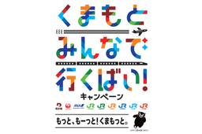
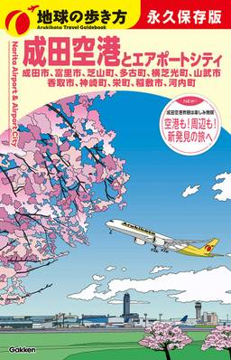

AIRLINE web -月刊エアライン×航空旅行-
https://airline.ikaros.jp
飛行機の運航を支える最前線、魅力あふれる空の旅のサービス、飛ぶためのテクノロジーやエアライン・空港の最新ビジネス動向、飛来機の撮影＆投稿など趣味として楽しむ航空の世界まで幅広く情報をお届けします。
フィード
ニュージーランド航空、成田＝クライストチャーチ直行便を就航。新仕様787-9を投入
AIRLINE web -月刊エアライン×航空旅行-
ニュージーランド航空が成田＝クライストチャーチ直行便の再会にあたってセレモニーを開催。キウイブラザーズも駆けつけた。 ニュージーランド航空は11月27日、成田空港とニュージーランド南島のクライストチャーチを結ぶ定期直行 […]The post ニュージーランド航空、成田＝クライストチャーチ直行便を就航。新仕様787-9を投入 first appeared on AIRLINE web -月刊エアライン×航空旅行-.
1日前
成田空港周辺の新IC、名称は「空港芝山インターチェンジ」に決定
AIRLINE web -月刊エアライン×航空旅行-
千葉県と東日本高速道路株式会社関東支社が共同で事業を進めている、C4首都圏中央連絡自動車道（圏央道）に新規追加される成田空港周辺IC（インターチェンジ、仮称）の名称が「空港芝山IC」に決定した。 成田空港周辺インター […]The post 成田空港周辺の新IC、名称は「空港芝山インターチェンジ」に決定 first appeared on AIRLINE web -月刊エアライン×航空旅行-.
1日前
ベトナム航空、公式サイトでPayPay決済に対応
AIRLINE web -月刊エアライン×航空旅行-
ベトナム航空は、2026年11月9日から日本向け公式Webサイトでの航空券購入において、キャッシュレス決済サービス「PayPay」による支払いに対応したと発表した。ベトナムに本拠を置く旅客航空会社が、自社の日本向け公式 […]The post ベトナム航空、公式サイトでPayPay決済に対応 first appeared on AIRLINE web -月刊エアライン×航空旅行-.
1日前
ANA FESTA、もりもとと北海道限定「生チョコクッキー」を5空港で発売。12月1日から
AIRLINE web -月刊エアライン×航空旅行-
「生チョコクッキー ハスカップ×ストロベリー」。 ANA FESTAと北海道創業の和洋菓子・パンの専門店もりもとは、両社初の共同開発商品として「生チョコクッキー ハスカップ×ストロベリー」を12月1日より北海道5空港で […]The post ANA FESTA、もりもとと北海道限定「生チョコクッキー」を5空港で発売。12月1日から first appeared on AIRLINE web -月刊エアライン×航空旅行-.
1日前

石垣空港「ANA FESTA 石垣ゲート店」リニューアルオープン。「石垣牛サンドイッチ」や「パインソフト」など限定商品も
AIRLINE web -月刊エアライン×航空旅行-
「ANA FESTA 石垣ゲート店」が11月27日にリニューアルオープン。 ANA FESTAは、11月27日に石垣空港の「ANA FESTA 石垣ゲート店」をリニューアルオープンすると発表した。同店は石垣空港2階の保 […]The post 石垣空港「ANA FESTA 石垣ゲート店」リニューアルオープン。「石垣牛サンドイッチ」や「パインソフト」など限定商品も first appeared on AIRLINE web -月刊エアライン×航空旅行-.
2日前

サンタクロースがフィンエアーに乗って成田空港に。“トナカイを休ませるため”飛行機で来日
AIRLINE web -月刊エアライン×航空旅行-
11月26日、フィンランドからサンタクロースがフィンエアーのAY73便に乗り、成田空港へ来日した。フィンエアーは、サンタクロースのオフィシャルエアラインとして、1980年代以来、40年以上にわたって世界中の子供達にクリ […]The post サンタクロースがフィンエアーに乗って成田空港に。“トナカイを休ませるため”飛行機で来日 first appeared on AIRLINE web -月刊エアライン×航空旅行-.
2日前

「くまもとみんなで行くばい！」、JAL・ANA・JR全6社が垣根を越えて2027年1月6日開始 航空・鉄道8社による共同誘客企画を展開
AIRLINE web -月刊エアライン×航空旅行-
熊本DC実行委員会と航空2社、JR6社の計9団体は11月26日、令和8年熊本地震からの復旧・復興を観光で応援する「くまもとみんなで行くばい！キャンペーン」を2027年1月6日から3月31日まで開催すると発表した。航空と […]The post 「くまもとみんなで行くばい！」、JAL・ANA・JR全6社が垣根を越えて2027年1月6日開始 航空・鉄道8社による共同誘客企画を展開 first appeared on AIRLINE web -月刊エアライン×航空旅行-.
2日前
成田空港、12月7日から「クリスマスフェア」第2弾。旅行券などが当たる抽選やクリスマス作品の展示
AIRLINE web -月刊エアライン×航空旅行-
成田国際空港は、12月7日から25日まで「ナリタエアポート・クリスマス2026」の第2弾として、「クリスマスフェア」と「クリスマス作品・ミニツリー展示」を開催すると発表した。空港内外の店舗を利用した人を対象に、旅行券や […]The post 成田空港、12月7日から「クリスマスフェア」第2弾。旅行券などが当たる抽選やクリスマス作品の展示 first appeared on AIRLINE web -月刊エアライン×航空旅行-.
2日前
ANAとJGAS、操縦士養成会社「ANA Next」設立、2027年度下期に鹿児島空港で事業開始へ
AIRLINE web -月刊エアライン×航空旅行-
ANAホールディングスとJGASがパイロット養成の新会社「ANA Next Aviation」を設立。 ANAホールディングス（ANAHD）は11月25日、Japan General Aviation Service（ […]The post ANAとJGAS、操縦士養成会社「ANA Next」設立、2027年度下期に鹿児島空港で事業開始へ first appeared on AIRLINE web -月刊エアライン×航空旅行-.
3日前
スターフライヤー、卓上カレンダーとオリジナルチョコを機内販売
AIRLINE web -月刊エアライン×航空旅行-
2027年カレンダー（卓上タイプ）：1,000円 スターフライヤーは11月24日、「2027年カレンダー（卓上タイプ）」と「オリジナルチョコレート10枚入（機内販売特別パッケージ）」2商品の機内販売を開始した。価格はい […]The post スターフライヤー、卓上カレンダーとオリジナルチョコを機内販売 first appeared on AIRLINE web -月刊エアライン×航空旅行-.
3日前
JR東日本・ANA・JALUX、新宿駅でふるさと納税に関する共同イベントを開催
AIRLINE web -月刊エアライン×航空旅行-
JR新宿駅「Suicaのペンギン広場」。 JR東日本、ANAあきんど、JALUXの3社は11月29日、JR新宿駅の「Suicaのペンギン広場」で「ふるさと納税でふるさとに帰ろう」を開催する。鉄道・航空グループ3社が今回 […]The post JR東日本・ANA・JALUX、新宿駅でふるさと納税に関する共同イベントを開催 first appeared on AIRLINE web -月刊エアライン×航空旅行-.
3日前
ZIPAIR、「体においしい 薬膳スープ粥」を機内販売商品に本格導入。機内Wi-Fiを活用した生体リズム診断も推進
AIRLINE web -月刊エアライン×航空旅行-
「体においしい 薬膳スープ粥（やさい潤穀・おろし貝柱）」 ZIPAIRは、11月16日より、ソウル線を除く全路線において「体においしい 薬膳スープ粥（やさい潤穀・おろし貝柱）」を機内販売商品として本格的に導入した。 […]The post ZIPAIR、「体においしい 薬膳スープ粥」を機内販売商品に本格導入。機内Wi-Fiを活用した生体リズム診断も推進 first appeared on AIRLINE web -月刊エアライン×航空旅行-.
5日前

「地球の歩き方 成田空港とエアポートシティ」表紙公開、予約販売開始
AIRLINE web -月刊エアライン×航空旅行-
成田国際空港（NAA）、gaaboo、地球の歩き方は、2027年2月18日に発売予定の『地球の歩き方 成田空港とエアポートシティ』の予約販売を、11月18日より開始した。 発売に先駆け、「地球の歩き方」読者や空港スタ […]The post 「地球の歩き方 成田空港とエアポートシティ」表紙公開、予約販売開始 first appeared on AIRLINE web -月刊エアライン×航空旅行-.
5日前

ANA、ソムリエ・森覚氏監修のセレクトワインセット2種をA-styleにて発売
AIRLINE web -月刊エアライン×航空旅行-
ソムリエの森覚氏監修による2つのワインセットを発売。 全日空商事は、日本を代表するソムリエで、ANAの機内搭載ワインの選定にも携わる森 覚（もり さとる）氏がセレクトしたワインセットを発売した。ANA公式ECサイト「A […]The post ANA、ソムリエ・森覚氏監修のセレクトワインセット2種をA-styleにて発売 first appeared on AIRLINE web -月刊エアライン×航空旅行-.
7日前
フォトコンの入賞作品を集めた「セントレアオリジナルカレンダー2027」、数量限定で販売開始
AIRLINE web -月刊エアライン×航空旅行-
「セントレアオリジナルカレンダー2027」 中部国際空港（セントレア）は、第1ターミナル4階セントレアオフィシャルショップSORA MONOにて、「セントレアオリジナルカレンダー2027」を数量限定（150本）で販売開 […]The post フォトコンの入賞作品を集めた「セントレアオリジナルカレンダー2027」、数量限定で販売開始 first appeared on AIRLINE web -月刊エアライン×航空旅行-.
8日前
福岡空港、「LUCKY BOARDING お買い物大抽選会」を11月21日から3日間開催
AIRLINE web -月刊エアライン×航空旅行-
「LUCKY BOARDING お買い物大抽選会」 福岡空港において、11月21日（土）から23日（月・祝）までの3日間、同空港での買い物や食事を対象とした「LUCKY BOARDINGお買い物大抽選会」を開催する。 […]The post 福岡空港、「LUCKY BOARDING お買い物大抽選会」を11月21日から3日間開催 first appeared on AIRLINE web -月刊エアライン×航空旅行-.
8日前
伝説のクイズ番組と羽田空港がコラボ。「アメリカ横断ウルトラクイズ in 羽田空港」開催
AIRLINE web -月刊エアライン×航空旅行-
「アメリカ横断ウルトラクイズ in 羽田空港」 羽田空港第1・第2ターミナルにおいて、11月20日から11月29日の期間、「アメリカ横断ウルトラクイズ in 羽田空港」を開催する。本企画は、2027年に番組誕生50周年 […]The post 伝説のクイズ番組と羽田空港がコラボ。「アメリカ横断ウルトラクイズ in 羽田空港」開催 first appeared on AIRLINE web -月刊エアライン×航空旅行-.
8日前
AIRDO、都内のロフト2店舗でオリジナルグッズを期間限定販売
AIRLINE web -月刊エアライン×航空旅行-
ロフトでの期間限定販売を開始したAIRDOオリジナルグッズ。 AIRDOは、10月12日（月・祝）より期間限定で、銀座ロフトと池袋ロフトにてAIRDOオリジナルグッズの販売を開始している。販売は11月30日（月）まで。 […]The post AIRDO、都内のロフト2店舗でオリジナルグッズを期間限定販売 first appeared on AIRLINE web -月刊エアライン×航空旅行-.
8日前
ANA、特別塗装機「ポケモンジェット 青」就航を12月12日に決定、能登“ポケモン”空港へ
AIRLINE web -月刊エアライン×航空旅行-
ANAは11月20日、ポケモン30周年特別企画の第3弾となる特別塗装機「ポケモンジェット 青」を12月12日に国内線定期便へ就航させると発表した。シリーズ最後を飾る同機の機材はボーイング737-800（登録記号：JA5 […]The post ANA、特別塗装機「ポケモンジェット 青」就航を12月12日に決定、能登“ポケモン”空港へ first appeared on AIRLINE web -月刊エアライン×航空旅行-.
8日前
貨物ハンドリングと安全品質の理解を深める、JAL CARGO グランドチャンピオンシップ 2026を開催
AIRLINE web -月刊エアライン×航空旅行-
「JAL CARGO グランドチャンピオンシップ 2026（Grand Championship -2026-）」を実施。 JALは11月17日、「JAL CARGO グランドチャンピオンシップ 2026（Grand […]The post 貨物ハンドリングと安全品質の理解を深める、JAL CARGO グランドチャンピオンシップ 2026を開催 first appeared on AIRLINE web -月刊エアライン×航空旅行-.
10日前
セントレア、空港事業者18社が集まる合同企業説明会を12月19日に開催
AIRLINE web -月刊エアライン×航空旅行-
セントレア空港事業者合同企業説明会。 中部国際空港は、12月19日に、中部国際空港セントレア第1ターミナル1階のセンターピアガーデンで「セントレア空港事業者合同企業説明会」を開催する。今回で6回目を迎える説明会には、空 […]The post セントレア、空港事業者18社が集まる合同企業説明会を12月19日に開催 first appeared on AIRLINE web -月刊エアライン×航空旅行-.
10日前
ホテルメトロポリタン羽田、JAL SKY MUSEUM見学付き宿泊プランを販売
AIRLINE web -月刊エアライン×航空旅行-
JAL SKY MUSEUMの見学体験（イメージ）。 ホテルメトロポリタン羽田は、2027年1月19日の宿泊と、翌20日の「JAL SKY MUSEUM」見学をセットにした体験型プランの販売を開始した。今回で通算4回目 […]The post ホテルメトロポリタン羽田、JAL SKY MUSEUM見学付き宿泊プランを販売 first appeared on AIRLINE web -月刊エアライン×航空旅行-.
10日前
キャセイグループ、A330neoとA321neoを追加導入。ブラックフライデーセールも実施
AIRLINE web -月刊エアライン×航空旅行-
キャセイグループ、新たにA330-900 11機とA321neo 3機を導入。 キャセイグループは、リージョナル路線用のワイドボディ機およびナローボディ機を新たに14機追加発注した。今回導入するのはA330-900 1 […]The post キャセイグループ、A330neoとA321neoを追加導入。ブラックフライデーセールも実施 first appeared on AIRLINE web -月刊エアライン×航空旅行-.
10日前
航空科学博物館と空飛ぶ学び舎ラボ、11月22日に謎解きイベント「AIRPORT MISSION」開催
AIRLINE web -月刊エアライン×航空旅行-
AIRPORT MISSION 空飛ぶ学び舎ラボは、航空科学博物館の協力のもと、11月22日に謎解きイベント「AIRPORT MISSION」を開催する。同イベントは、空港で巻き起こる不可解な消滅現象をテーマに、2施設 […]The post 航空科学博物館と空飛ぶ学び舎ラボ、11月22日に謎解きイベント「AIRPORT MISSION」開催 first appeared on AIRLINE web -月刊エアライン×航空旅行-.
10日前
スプリング・ジャパン新塗装初号機「JA05GR」、成田＝函館線で国内線初就航。浅見社長らが横断幕でお見送り
AIRLINE web -月刊エアライン×航空旅行-
スプリング・ジャパンの新塗装機が国内線初就航。 スプリング・ジャパンは11月17日、ブランドリニューアルに伴う新塗装初号機（ボーイング737-800、登録記号：JA05GR）による国内線初便として、成田発函館行きIJ8 […]The post スプリング・ジャパン新塗装初号機「JA05GR」、成田＝函館線で国内線初就航。浅見社長らが横断幕でお見送り first appeared on AIRLINE web -月刊エアライン×航空旅行-.
11日前
関西国際空港、インバウンド旅客数が累計2億人を突破
AIRLINE web -月刊エアライン×航空旅行-
セレモニーの様子。 関西エアポートは、関西国際空港における開港以来のインバウンド（訪日外国人）旅客数が、累計2億人に達したことを記念して、2億人記念セレモニーを実施した。 セレモニーでは、関西エアポート 専務執行役員 […]The post 関西国際空港、インバウンド旅客数が累計2億人を突破 first appeared on AIRLINE web -月刊エアライン×航空旅行-.
11日前
京急に「ANAのふるさと納税トレイン」が登場。鉄道・空港・機内をつないで地域の物語を発信
AIRLINE web -月刊エアライン×航空旅行-
京急でラッピング車両「ANAのふるさと納税トレイン」の運行がスタート。 ANAあきんどは、2026年度下期における「ANAのふるさと納税」の大規模プロモーションを11月16日より始動した。「ふるさと納税に、物語をもっと […]The post 京急に「ANAのふるさと納税トレイン」が登場。鉄道・空港・機内をつないで地域の物語を発信 first appeared on AIRLINE web -月刊エアライン×航空旅行-.
12日前
ANA、客席シートカバーの生地を使用した限定コレクション発売。整備部門の新規事業「2ND RUNWAY」
AIRLINE web -月刊エアライン×航空旅行-
ANAは、整備部門が、航空機に関連する素材などを活用し、ファッションやインテリア商品として新たな価値を生み出すプロジェクト「2ND RUNWAY（セカンドランウェイ）PROJECT」を始動すると発表した。 「2ND […]The post ANA、客席シートカバーの生地を使用した限定コレクション発売。整備部門の新規事業「2ND RUNWAY」 first appeared on AIRLINE web -月刊エアライン×航空旅行-.
12日前
JAL、福岡=高知線、奄美大島線を期間限定で増便
AIRLINE web -月刊エアライン×航空旅行-
JALグループは、2027年2月21日から3月27日まで、福岡=高知線と福岡=奄美大島線を期間限定で増便する。両路線ともに1日1往復ずつ増便し、高知線は1日3往復、奄美大島線は1日2往復運航する。 今回の増便は、春の […]The post JAL、福岡=高知線、奄美大島線を期間限定で増便 first appeared on AIRLINE web -月刊エアライン×航空旅行-.
12日前
ANAグループによる国内独占販売から20年――エクアドル「田辺農園」バナナの開拓史
AIRLINE web -月刊エアライン×航空旅行-
左から田辺農園の農園副総支配人 田邊洋樹氏、農園主 田邊正裕氏、ANAフーズ 生鮮食品事業本部 輸入開発部 輸入開発チームの仲松佑梨氏。 ANAグループにおいて食品の輸入・販売などを担うANAフーズは、複数のバナナのブ […]The post ANAグループによる国内独占販売から20年――エクアドル「田辺農園」バナナの開拓史 first appeared on AIRLINE web -月刊エアライン×航空旅行-.
12日前
ANA、「GREEN×EXPO 2027」に協賛。特別デカール機や機内コラボアイテム展開
AIRLINE web -月刊エアライン×航空旅行-
ANA×「GREEN EXPO 2027」 ANAホールディングスは、2027年3月19日より神奈川県横浜市で開催される「GREEN×EXPO 2027」のゴールドパートナーとして「機運醸成プロジェクト」に協賛する。 […]The post ANA、「GREEN×EXPO 2027」に協賛。特別デカール機や機内コラボアイテム展開 first appeared on AIRLINE web -月刊エアライン×航空旅行-.
14日前
AIRDO、「白い恋人」誕生50周年を記念した機内コラボ企画
AIRLINE web -月刊エアライン×航空旅行-
白い恋人×AIRDO 機内コラボレーション企画。 機内サンプリング。 石屋製菓とAIRDOは、北海道土産の定番「白い恋人」が今年で誕生50周年を迎えることを記念したコラボレーション企画を2026年12月～2027年8月 […]The post AIRDO、「白い恋人」誕生50周年を記念した機内コラボ企画 first appeared on AIRLINE web -月刊エアライン×航空旅行-.
15日前